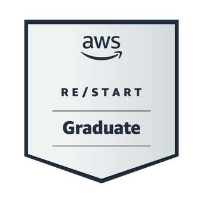
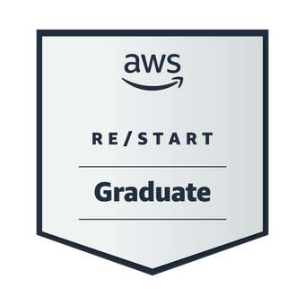
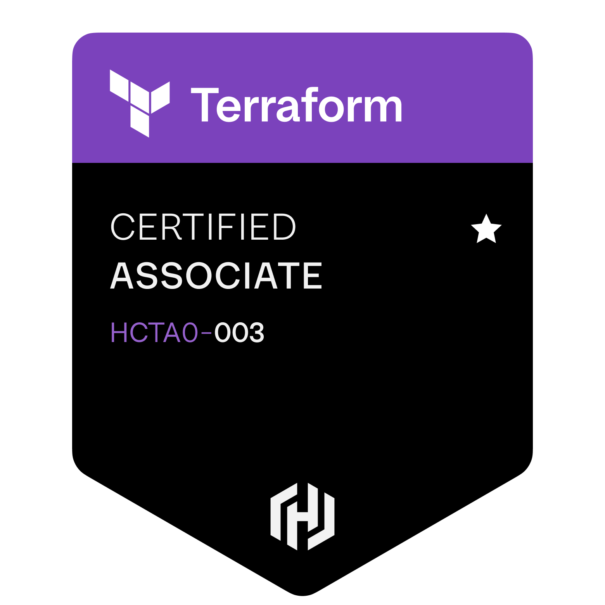
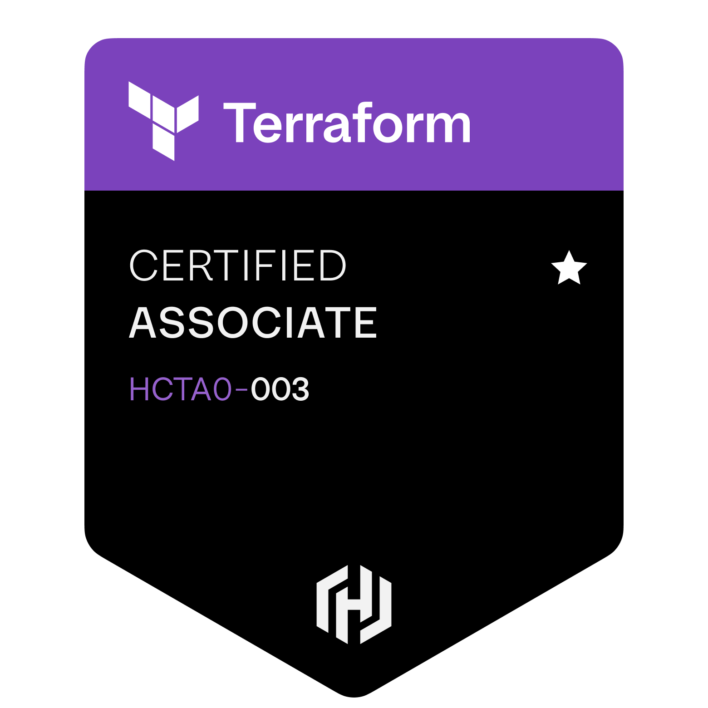

Wladyson Araújo
I'm
Sobre
Técnico em Informática e graduando em Sistemas de Informação, com forte base em desenvolvimento de software. Tenho experiência em Ciência de Dados e Inteligência Artificial, atuando com machine learning, análise de dados e soluções práticas baseadas em IA. Também possuo formação em computação em nuvem, com foco em arquitetura de serviços na AWS e aplicação de boas práticas do setor.
- Nascimento: 23/02/2006
- Cidade: Quixadá - CE, Brasil
Contatos
wladysonaraujo991@gmail.com
Links
LinkerdinGitHub
Experiência e Formação
Experiência e Formação em tecnologia, com foco em desenvolvimento de sistemas, dados, infraestrutura em nuvem e soluções práticas aplicadas no dia a dia.
Formação Academicas

Bacharel em
Sistemas de Informação
Tecnico em
Informática

Computação em
Infraestutura de Nuvem (AWS)

Ciencia de
Dados e Inteligencia Artificial
Sistemas de Informação
Centro Universitário Catolica de Quixada, Quixada - CEJan 2024 - Dez 2027
Formação voltada para desenvolvimento de sistemas e soluções em tecnologia da informação. Foco em programação backend banco de dados, segurança da informação etc. Projetos com uso de Python Java, C#, PostgreSQL, C etc. Trabalhos integradores com metodologias ágeis como Scrum e Kanban, Estudos avançados em algoritmos estruturas de dados redes e engenharia de software, aplicações práticas em segurança digital, inteligência artificial e sistemas financeiros. Participação em projetos acadêmicos com foco em aplicações escaláveis e seguras, vivência em ambientes colaborativos e uso de versionamento com Git e GitHub
Ciencia de Dados e Inteligencia Artificial
Universidade Estadual do Ceara, Fortaleza - CEJan 2025 - Jan 2026
Formação intensiva com foco em Ciência de Dados e IA, promovida pelo MCTI com certificação emitida pela Universidade Estadual do Ceará (UECE). O curso abordou desde os fundamentos até aplicações avançadas em ciência de dados. Aprofundei conhecimentos e Desenvolvi projetos práticos integrando técnicas modernas aplicadas a problemas reais.
Computação em Infraestutura de Nuvem
Escola da Nuvem, São Paulo - SPMai 2025 - Nov 2025
Formação técnica voltada para arquitetura de soluções na nuvem com serviços AWS. Trabalho com EC2, S3, RDS, IAM, Lambda, SNS, VPC e CloudFormation em ambientes reais. Aplicação de boas práticas de segurança e resiliência em infraestruturas escaláveis, criação de pipelines, CI/CD com GitHub Actions e CodePipeline para automação, provisionamento com Terraform e controle de ambiente por meio de infraestrutura como código, monitoramento com CloudWatch e integração de logs com VPC, Flow Logs e CloudTrail. Foco em práticas DevOps governança de nuvem e arquitetura orientada a eventos
Tecnico em Informática
EEP Clemente Olintho, Baturité - CEJan 2021 - Dez 2023
Curso técnico com foco em desenvolvimento de sistemas suporte e infraestrutura de TI. Criação de aplicações desktop e web com Java, C#, HTML, CSS e JavaScript. Introdução a banco de dados relacionais com MySQL e uso de queries e modelagem, aulas práticas de montagem manutenção formatação e configuração de computadores, conhecimentos em redes TCP IP cabeamento e configuração de roteadores e switches e uso de lógica de programação estruturas condicionais laços e orientação a objetos.
Certificações
- Inglês Intermediário para Profissionais de TI – Dell Technologies | 2025
- Desenvolvimento Apex e Banco de Dados Oracle - Instituto Serzedello Corrêa | 2025
- Programação em Java Avançado – Instituto Federal do Rio Grande do Sul (IFRS) | 2024
- Administrador de Banco de Dados – Instituto Federal do Rio Grande do Sul (IFRS) | 2024
- Power BI Discovery - Treinamento Microsoft - Comunidade Data Driver | 2024
- Segurança em Tecnologia da Informação - Bradesco | 2024
Badges Digitais
 



 

Experiência Profissional
Analista de Dados
Atenção Medica OftalmológicaAbr - 2024 - Jul - 2025
- Atuei na área administrativa com foco em gestão e análise de dados na saúde com uso de python para automatizar tarefas e tratamento de informações
- Organizei registros de pacientes que antes eram feitos em folhas de papel que era uma problemática, pois era perdido bastante tempo preenchendo com as documetações das pessoas, assim foi transferido para planilhas eletrônicas e sistemas, agilizando a gestão e tratamento dos dados para dashboards em BI afim de termos controle de quantos pacientes passaram pelo estabelecimento e reduzindo erros.
- Trabalhei diariamente com grandes volumes de dados, utilizando Excel, Power BI e outras ferramentas para tratamento, cruzamento e análise.
- Criei planilhas automatizadas com fórmulas, validações, filtros, tabelas dinâmicas e macros.
- Desenvolvi dashboards interativos no Power BI para monitoramento de indicadores e apoio à tomada de decisões estratégicas.
- Automatizei processos manuais, melhorando a organização das informações e contribuindo para a segurança e integridade dos dados.
- Realizei limpeza e tratamento de dados, removendo duplicatas e padronizando formatos com o uso de Python.
- Implementei conectores no Power BI para integração com diversas fontes de dados e automatizei tarefas repetitivas de carregamento com Power Query.
Tecnico em TI
Atenção Medica OftalmológicaJul 2023 - Dez 2023
- Atuei na área de suporte técnico, prestando atendimento presencial aos usuários, com foco na agilidade, eficiência e resolução precisa dos problemas.
- Realizava manutenções preventivas e corretivas em hardware, identificando falhas recorrentes de desempenho causadas por módulos de memória RAM defeituosos. Após diagnóstico, executava a substituição da memória e a limpeza completa do equipamento, finalizando com a reinstalação e configuração dos softwares necessários para garantir o pleno funcionamento do sistema.
- Instalava, configurava e atualizava sistemas operacionais (Windows/Linux) e aplicativos corporativos.
- Responsável pela formatação de máquinas e diagnóstico de falhas.
- Prestava suporte em redes locais e conectividade.
- Contribuí para a estabilidade dos sistemas e continuidade dos serviços, criando um ambiente mais seguro e produtivo para os colaboradores.
- Propus melhorias, organizei rotinas técnicas assim diminuindo atividade repetitivas e promovi boas práticas no uso dos recursos de TI.
Competência Comportamental
- Aprendizado Contínuo.
- Resolução de Problemas.
- Trabalho em Equipe.
- Proatividade Adaptação e Resiliência.
- Pensamento Crítico.
- Gestão do Tempo Orientação para Resultados.
Idiomas
- Inglês– Intermediário para leitura
- Espanhol– Intermediário para leitura e escrita
Portifolio
Tecnologias e metodos utilizadas em meus trabalhos para produtividade e desenvolvimento de ambientes escalaveis.


{kind=link}
{kind=link}
{kind=link}
Competência Técnica
Extras
Desenvolvimento com Java - Rocketseat | Fev/2025 - Jun/2025
- Desenvolvimento de aplicação serverless com Java e Maven para redirecionamento de urls. Realizado a integração com AWS S3 para criação e gerenciamento de buckets, exposição de endpoints via API Gateway, uso de AWS Lambda para processamento serverless, e manipulação de dados em JSON com Jackson e desenvolvimento de aplicação back-end Java com Maven utilizando SpringBoot e API Rest. Estruturação do projeto desde a modelagem dos dados até a implementação das funcionalidades principais. Integração com o banco de dados MySQL utilizando JPA e JDBC. Utilização de records para manipulação dos dados. Implementação de um sistema de indicações com ranking dos usuários que mais convidaram pessoas para o evento.
Desenvolvimeto com Java - Projeto Pessoal | Jan/2025 - Atual
- Game com cenário roguelike em Java utilizando Maven para gerenciamento de dependências e build, com geração procedural de mapas, inimigos e eventos, arquitetura baseada no padrão MVC, sistema de combate por turnos com atributos como força, agilidade e sorte, persistência de dados em arquivos JSON, geração de mapas com algoritmos como random walk, controle de entrada via teclado, interface gráfica com Java 2D, sistema de salvamento automático e logs de sessão, testes automatizados com JUnit, empacotamento e versionamento do projeto facilitado pelo Maven, com foco em escalabilidade e manutenibilidade do código, como java depende muito de memoria ram da maquina optei por transformar parte do codigo em C juntamente com C# para uma configuração grafica melhorada, o game ainda esta em desenvolvimento e testes sem data definida de finalização, pois seram feitas ainda mais modificações para um cenários mais rico e com interatividade com o jagador, proporcionando uma experiência disferenciada.
NLW Pocket: Mobile - Kotlin - Curso Rocketseat | Dez/2024 - Dez/2024
- Desenvolvimento de uma aplicação mobile Android nativo com Kotlin, Android Studio, MVI + Clean, Architecture,Jetpack Compose, ViewModel e Lifecycle, Navigation, Google Maps API, Flow e Coroutines, Ktor, Kotlinx, Serialization, Coil, Gradle
NLW Pocket: Javascript - Curso Rocketseat | Nov/2024 - Nov/2024
- Desenvolvimento de uma aplicação back-end em Node.js, aplicação dos conceitos de API REST, utilizando TypeScript, Fastify como framework, integração do DrizzleORM + PostgreSQL, Docker e Zod para validação de dados. Desenvolvimento de uma aplicação front-end em ReactJS, aplicação dos conceitos de Propriedades, Estados e Componentes,tipagem com Typescript,tooling com Vite, interface responsiva com TailwindCSS, consumo de API Node.js, gerenciamento de dados assíncronos com TanStack Query.
Desenvolvimento PHP – Curso Rocketseat | Out/2024 – Out/2024
- Desenvolvimento de uma aplicação em PHP com Laravel seguindo a arquitetura MVC, conceitos e criação de controllers, models e views para estruturar a nossa aplicação, SQLite, uso de migrations, criação de dados falsos com as factories e seeders pra popular o banco, validações e criação de interfaces dinâmicas e reativas com o Livewire.
IA na prática - Rocketseat | Agost/2024 – Agost/2024
- Desenvolvimento de aplicação Python, integração com modelo GPT da OpenAI, uso do framework CrewAI, criação de agente para consumo de dados do duckduckgo, criação de frontend com framework StreamLit, deploy via StreamLit cloud.
NLW Journey - Java da Rocketseat | Jul/2024 – Jul/2024
- Desenvolvimento de uma aplicação back-end em Java com Spring boot utilizando ferramentas modernas para garantir eficiência e escalabilidade. Neste projeto foi utilizado h2 database,JPA, migrations via Flyway, uso de records para transferências de dados, Lombok.
Desenvolvimeto Web - Projeto Pessoal | Jan/2024 - Atual
- Criação de um jogo online com temática de cassino, combinando lógica de
apostas, geração de slots aleatórios, controle de apostas e ganhos no game,
prevenção de ganhos em cada jogada, balanceamento dinâmico e fair play,
monitoramento de manipulação de resultado, carteiras e dinâmicas com moedas.
O projeto adota arquitetura em microsserviços, com backend em Python
(FastAPI), frontend em JavaScript puro e React para animações, Prometheus e
Grafana para microsserviços juntamente com Docker. Utiliza bancos de dados
PostgreSQL e infraestrutura de servidores em PHP, hospedados e orquestrados
na AWS com uso de Terraform para provisionamento automatizado. Também
inclui segurança da informação (autenticação, autorização, proteção contra
SQL injections, sistemas de alerta, ), tradução de idiomas, integração com APIs e
construção das mesmas para o game com a utilização do insomnia, totalmente
focado em escalabilidade e desempenho, visando uma experiência de elite.
Observações: Este projeto é apenas para fins de estudo e aprendizado, como as tecnologias vão se comportar em seus deteminados cenários. Nenhuma funcionalidade está vinculada a apostas reais ou transações financeiras com dinheiro real. Este projeto ainda esta em desenvolvimento sem prévia de finalização, pois como as atualizações tecnólogicas estão sempre se atualizando, o game vai buscar os cenários mais atuais dos dias de hoje.